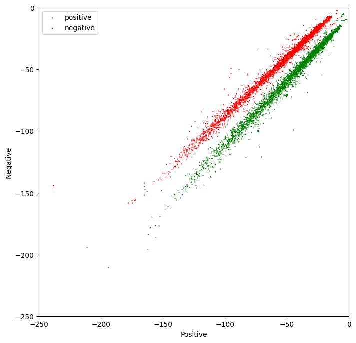
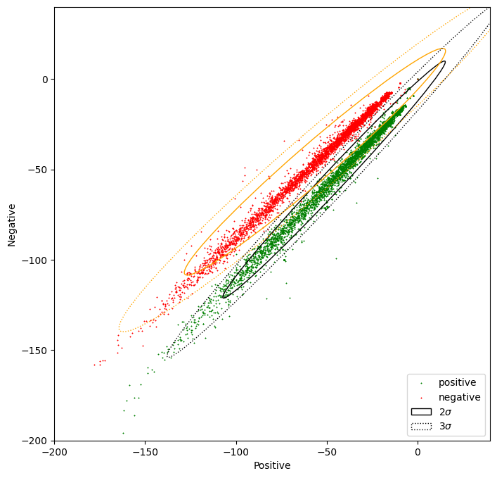
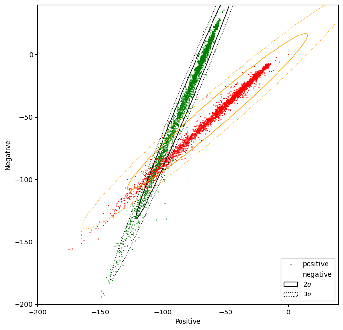

Visualizing Naive Bayes
In this lab, we will cover an essential part of data analysis that has not been included in the lecture videos. As we stated in the previous module, data visualization gives insight into the expected performance of any model.
In the following exercise, you are going to make a visual inspection of the tweets dataset using the Naïve Bayes features. We will see how we can understand the log-likelihood ratio explained in the videos as a pair of numerical features that can be fed in a machine learning algorithm.
At the end of this lab, we will introduce the concept of confidence ellipse as a tool for representing the Naïve Bayes model visually.
import numpy as np # Library for linear algebra and math utils
import pandas as pd # Dataframe library
import matplotlib.pyplot as plt # Library for plots
from utils_week2 import confidence_ellipse # Function to add confidence ellipses to charts
## Calculate the likelihoods for each tweet
For each tweet, we have calculated the likelihood of the tweet to be positive and the likelihood to be negative. We have calculated in different columns the numerator and denominator of the likelihood ratio introduced previously.
We did not include the code because this is part of this week's assignment. The 'bayes_features.csv' file contains the final result of this process.
The cell below loads the table in a dataframe. Dataframes are data structures that simplify the manipulation of data, allowing filtering, slicing, joining, and summarization.
data = pd.read_csv('./data/bayes_features.csv'); # Load the data from the csv file
data.head(5) # Print the first 5 tweets features. Each row represents a tweet
| positive | negative | sentiment | |
|---|---|---|---|
| 0 | -45.763393 | -63.351354 | 1.0 |
| 1 | -105.491568 | -114.204862 | 1.0 |
| 2 | -57.028078 | -67.216467 | 1.0 |
| 3 | -10.055885 | -18.589057 | 1.0 |
| 4 | -125.749270 | -138.334845 | 1.0 |
# Plot the samples using columns 1 and 2 of the matrix
fig, ax = plt.subplots(figsize = (8, 8)) #Create a new figure with a custom size
colors = ['red', 'green'] # Define a color palete
sentiments = ['negative', 'positive']
index = data.index
# Color base on sentiment
for sentiment in data.sentiment.unique():
ix = index[data.sentiment == sentiment]
ax.scatter(data.iloc[ix].positive, data.iloc[ix].negative, c=colors[int(sentiment)], s=0.1, marker='*', label=sentiments[int(sentiment)])
ax.legend(loc='best')
# Custom limits for this chart
plt.xlim(-250,0)
plt.ylim(-250,0)
plt.xlabel("Positive") # x-axis label
plt.ylabel("Negative") # y-axis label
plt.show()

Using Confidence Ellipses to interpret Naïve Bayes
In this section, we will use the confidence ellipse to give us an idea of what the Naïve Bayes model see.
A confidence ellipse is a way to visualize a 2D random variable. It is a better way than plotting the points over a cartesian plane because, with big datasets, the points can overlap badly and hide the real distribution of the data. Confidence ellipses summarize the information of the dataset with only four parameters:
- Center: It is the numerical mean of the attributes
- Height and width: Related with the variance of each attribute. The user must specify the desired amount of standard deviations used to plot the ellipse.
- Angle: Related with the covariance among attributes.
The parameter n_std stands for the number of standard deviations bounded by the ellipse. Remember that for normal random distributions:
- About 68% of the area under the curve falls within 1 standard deviation around the mean.
- About 95% of the area under the curve falls within 2 standard deviations around the mean.
- About 99.7% of the area under the curve falls within 3 standard deviations around the mean.

In the next chart, we will plot the data and its corresponding confidence ellipses using 2 std and 3 std.
# Plot the samples using columns 1 and 2 of the matrix
fig, ax = plt.subplots(figsize = (8, 8))
colors = ['red', 'green'] # Define a color palete
sentiments = ['negative', 'positive']
index = data.index
# Color base on sentiment
for sentiment in data.sentiment.unique():
ix = index[data.sentiment == sentiment]
ax.scatter(data.iloc[ix].positive, data.iloc[ix].negative, c=colors[int(sentiment)], s=0.1, marker='*', label=sentiments[int(sentiment)])
# Custom limits for this chart
plt.xlim(-200,40)
plt.ylim(-200,40)
plt.xlabel("Positive") # x-axis label
plt.ylabel("Negative") # y-axis label
data_pos = data[data.sentiment == 1] # Filter only the positive samples
data_neg = data[data.sentiment == 0] # Filter only the negative samples
# Print confidence ellipses of 2 std
confidence_ellipse(data_pos.positive, data_pos.negative, ax, n_std=2, edgecolor='black', label=r'$2\sigma$' )
confidence_ellipse(data_neg.positive, data_neg.negative, ax, n_std=2, edgecolor='orange')
# Print confidence ellipses of 3 std
confidence_ellipse(data_pos.positive, data_pos.negative, ax, n_std=3, edgecolor='black', linestyle=':', label=r'$3\sigma$')
confidence_ellipse(data_neg.positive, data_neg.negative, ax, n_std=3, edgecolor='orange', linestyle=':')
ax.legend(loc='lower right')
plt.show()

In the next cell, we will modify the features of the samples with positive sentiment (1), in a way that the two distributions overlap. In this case, the Naïve Bayes method will produce a lower accuracy than with the original data.
data2 = data.copy() # Copy the whole data frame
# The following 2 lines only modify the entries in the data frame where sentiment == 1
data2.negative[data.sentiment == 1] = data2.negative * 1.5 + 50 # Modify the negative attribute
data2.positive[data.sentiment == 1] = data2.positive / 1.5 - 50 # Modify the positive attribute
/var/folders/lh/bnk9x08x35vdc9q7jby9wsv8f1fp97/T/ipykernel_24700/2253601370.py:4: FutureWarning: ChainedAssignmentError: behaviour will change in pandas 3.0!
You are setting values through chained assignment. Currently this works in certain cases, but when using Copy-on-Write (which will become the default behaviour in pandas 3.0) this will never work to update the original DataFrame or Series, because the intermediate object on which we are setting values will behave as a copy.
A typical example is when you are setting values in a column of a DataFrame, like:
df["col"][row_indexer] = value
Use `df.loc[row_indexer, "col"] = values` instead, to perform the assignment in a single step and ensure this keeps updating the original `df`.
See the caveats in the documentation: https://pandas.pydata.org/pandas-docs/stable/user_guide/indexing.html#returning-a-view-versus-a-copy
data2.negative[data.sentiment == 1] = data2.negative * 1.5 + 50 # Modify the negative attribute
/var/folders/lh/bnk9x08x35vdc9q7jby9wsv8f1fp97/T/ipykernel_24700/2253601370.py:5: FutureWarning: ChainedAssignmentError: behaviour will change in pandas 3.0!
You are setting values through chained assignment. Currently this works in certain cases, but when using Copy-on-Write (which will become the default behaviour in pandas 3.0) this will never work to update the original DataFrame or Series, because the intermediate object on which we are setting values will behave as a copy.
A typical example is when you are setting values in a column of a DataFrame, like:
df["col"][row_indexer] = value
Use `df.loc[row_indexer, "col"] = values` instead, to perform the assignment in a single step and ensure this keeps updating the original `df`.
See the caveats in the documentation: https://pandas.pydata.org/pandas-docs/stable/user_guide/indexing.html#returning-a-view-versus-a-copy
data2.positive[data.sentiment == 1] = data2.positive / 1.5 - 50 # Modify the positive attribute
Now let us plot the two distributions and the confidence ellipses
# Plot the samples using columns 1 and 2 of the matrix
fig, ax = plt.subplots(figsize = (8, 8))
colors = ['red', 'green'] # Define a color palete
sentiments = ['negative', 'positive']
index = data2.index
# Color base on sentiment
for sentiment in data2.sentiment.unique():
ix = index[data2.sentiment == sentiment]
ax.scatter(data2.iloc[ix].positive, data2.iloc[ix].negative, c=colors[int(sentiment)], s=0.1, marker='*', label=sentiments[int(sentiment)])
#ax.scatter(data2.positive, data2.negative, c=[colors[int(k)] for k in data2.sentiment], s = 0.1, marker='*') # Plot a dot for tweet
# Custom limits for this chart
plt.xlim(-200,40)
plt.ylim(-200,40)
plt.xlabel("Positive") # x-axis label
plt.ylabel("Negative") # y-axis label
data_pos = data2[data2.sentiment == 1] # Filter only the positive samples
data_neg = data[data2.sentiment == 0] # Filter only the negative samples
# Print confidence ellipses of 2 std
confidence_ellipse(data_pos.positive, data_pos.negative, ax, n_std=2, edgecolor='black', label=r'$2\sigma$' )
confidence_ellipse(data_neg.positive, data_neg.negative, ax, n_std=2, edgecolor='orange')
# Print confidence ellipses of 3 std
confidence_ellipse(data_pos.positive, data_pos.negative, ax, n_std=3, edgecolor='black', linestyle=':', label=r'$3\sigma$')
confidence_ellipse(data_neg.positive, data_neg.negative, ax, n_std=3, edgecolor='orange', linestyle=':')
ax.legend(loc='lower right')
plt.show()

To give away: Understanding the data allows us to predict if the method will perform well or not. Alternatively, it will allow us to understand why it worked well or bad.